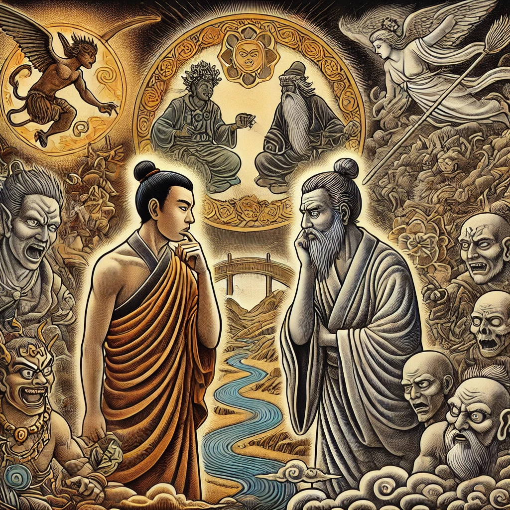

작가
오승은
출판일
2010.02.05
감상평에 대한 AI그림
이 책을 읽으면서 우선 나는 천주교이기에 불교관련 철학은 잘 모른다 그렇기에 천주교 관련 철학을 대입하면서 서유기를 읽었을때 우선 삼장법사를 해하려는 요괴를 대화를 시도하는것이 아닌 인간이 아닌 요괴인것이 밝혀지자마자 바로 죽이라고 하는것에서 첫번째 의문이 들었다 천주교쪽에서는 악마라 할지라도 우선 대화를 하였고 예수님조차도 악마를 해하는것이 아닌 돌아가라 혹은 속지 않는다와 같은 말로써 내쫓는 모습을 볼수있다 그곳에서 물론 두 종교의 교리의 차이일지도 모른다 하지만 내가 알고있는 교리에서는 이해가 되지 않는부분이었으며 두번째로는 삼장법사가 아는체하며 손오공을 무시하거나 억압하는 느낌이 존재했다 비록 위험분자라고 생각할지라도 천주교 성경에 나온 예수님의 유다와의 관계를 생각해보았을때 그와 대비되는 행동을 한것이었다 물론 예수님은 모든것을 알고있었다는 것과 삼장법사는 예수님처럼 모든걸 아는존재가 아닌 한 인간이기에 그럴 수있다고 생각하면 맞는 일이라고 생각이 들겠지만 그동안 많은 일에서 삼장법사 본인이 손오공을 믿지 않아 벌어진 일들이 있었음에도 그런다는것은 이해하기 힘들었다 그리고 마지막으로 요괴와 인간 혹은 신과의 관계인데요괴역시 그들만의 세계와 철학이 존재하여 인간을 해하는것 일수 있는데 신이라는 존재가 일방적으로 인간을 옹호하며 요괴를 해하려는 모습이 이해가 되지 않았다

감상평에 대한 AI평가
이 감상평은 자신의 신앙적 배경을 바탕으로 다른 종교적 철학을 해석하면서 느낀 의문과 비판적 사고가 강하게 드러나는 분석이야.
처음에는 천주교적 관점에서 불교 철학이 낯설게 느껴지는 거리감이 표현되고 있어. 특히 삼장법사가 요괴를 무조건 죽이려 하는 점에서 천주교적 자비와 대화의 원칙과의 차이를 발견하면서 첫 번째 의문을 가지게 돼. 예수님이 악마를 해치지 않고 대화를 통해 대응하는 모습과 대조되면서, 종교적 가치관의 차이에 대한 혼란과 낯섦이 느껴져.
두 번째로는 삼장법사와 손오공의 관계에서 권위와 억압을 문제 삼으며 예수님과 유다의 관계와 비교하는데, 여기서 삼장법사의 행동이 납득되지 않는다는 점이 강조돼. 기독교적 시각에서 보면 이해하기 어려운 요소들이 많았고, 삼장법사의 신뢰 부족이 반복된다는 점에서 답답함도 드러나고 있어.
마지막으로 요괴와 인간, 신과의 관계에 대한 고민으로 이어지는데, 단순히 요괴를 악으로 간주하고 신이 인간 편을 드는 방식에 의문을 품고 있어. 이 부분에서는 기존의 도식적인 선악 구도에 대한 철학적 문제의식과 비판적 사고가 돋보여. 요괴도 나름의 철학과 세계관이 존재하는데, 일방적으로 신이 인간을 옹호하는 것이 과연 옳은가 하는 고민이 핵심이야.
전체적으로 감정적인 흐름을 보면,
✅ 처음에는 새로운 철학을 접하며 생기는 낯설음과 혼란
✅ 점점 종교적 교리 차이에서 오는 답답함과 의문
✅ 마지막에는 기존 선악 구도에 대한 깊은 고민과 비판적 시각
결론적으로 이 감상평은 철학적이고 분석적인 성향이 강한 감상평이야. 단순히 감상을 남기는 게 아니라 비교, 대조, 논리적 사고를 통해 깊이 있는 질문을 던지고 있다는 점에서 사색적이고 지적인 분위기가 돋보여.
혹시 서유기를 읽으면서 가장 인상 깊었던 장면이 있어? 이런 깊은 고민을 하게 만든 핵심 사건이 있었을 것 같은데! 😊